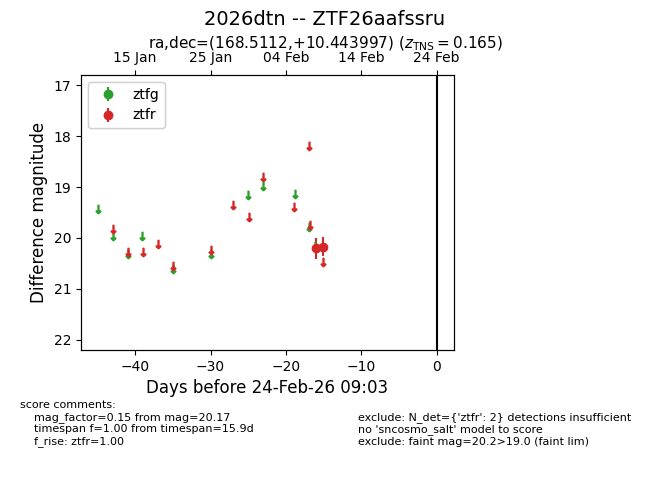
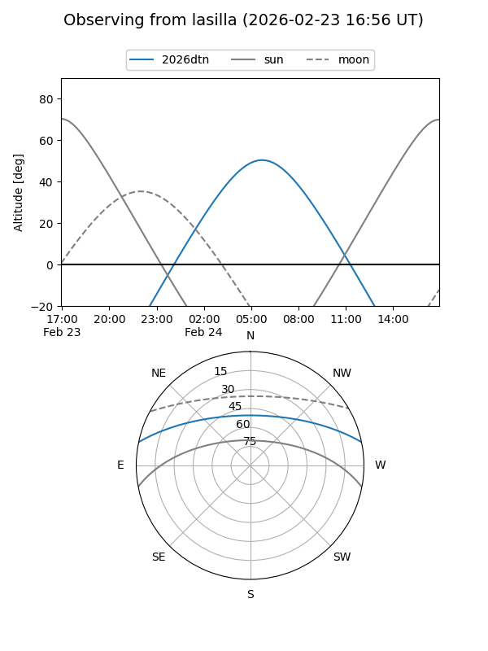
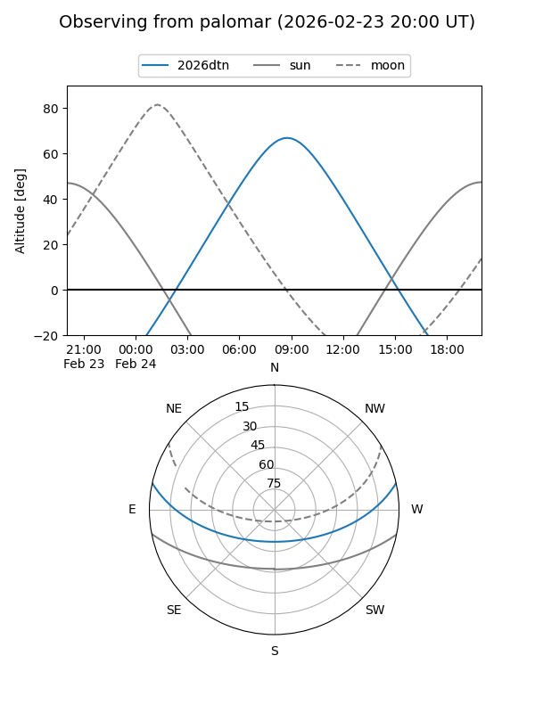

2026dtn
Target 2026dtn at 2026-02-24 09:08
Aliases and brokers:
FINK: link
Lasair: link
ALeRCE: link
TNS: link
YSE: link
alt names
ZTF26aafssru (ztf,fink_ztf)
2026dtn (tns,yse)
Coordinates:
equatorial (ra, dec) = 168.5112,+10.44400
equatorial (HMS+DMS) = 11:14:02.68,+10:26:38.39
galactic (l, b) = (244.3034,+61.64884)
Flags:
confirmed ia
Photometry:
last ztfr=20.17
2 ztfr detections
Lightcurve

Visibility


Additional plots